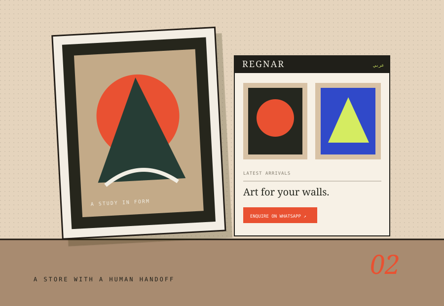

ART FOR WALLS, WITHOUT THE CHECKOUT THEATRE.
REGNAR®
A bilingual framed-art storefront built around product discovery and direct WhatsApp enquiries, supported by a practical admin workflow.

THE STARTING POINT
Give the problem
a useful shape.
REGNAR sells framed posters and wall art. The storefront needed to make a visual catalogue feel premium while keeping the purchase journey honest: customers browse designs, choose a size and contact the business to enquire.
The public experience supports English and Arabic content, product galleries and size-based pricing. Behind it, the admin area manages products, categories, storefront messaging and product imagery. The flow intentionally uses WhatsApp enquiries rather than a simulated online checkout.
WHAT'S IN THE BUILD
- 01Bilingual English / Arabic storefront content.
- 02Product galleries with multiple views and size-specific prices.
- 03Admin controls for categories, product status and homepage content.
- 04WhatsApp-based enquiries with no fake payment or checkout flow.
THE DESIGN INTENT
Keep a premium visual shop connected to the real operating process behind the business.